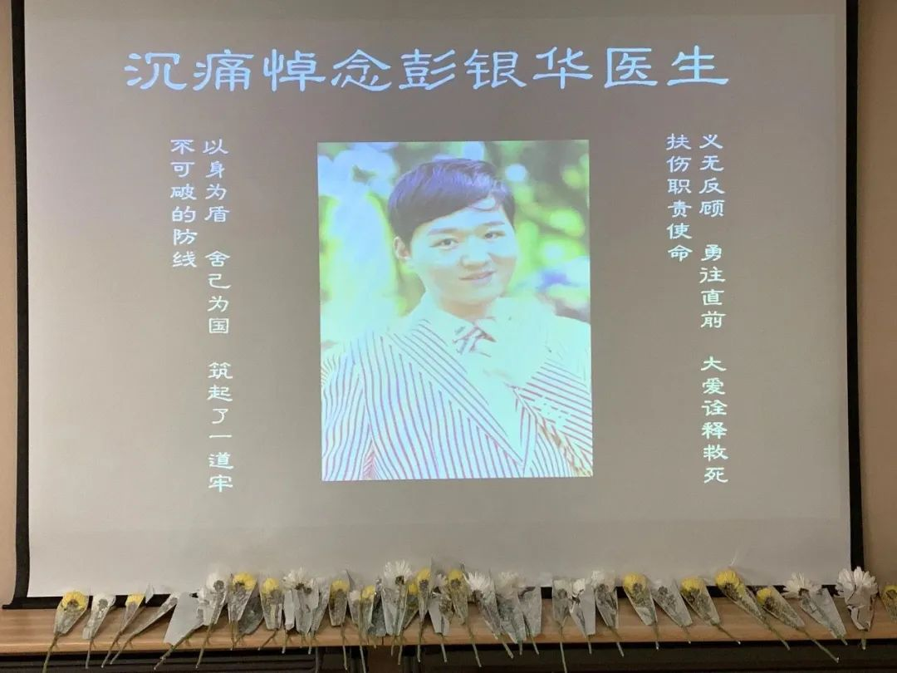
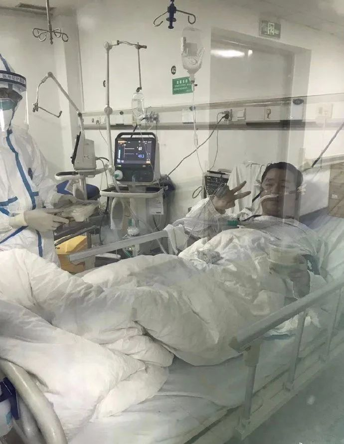
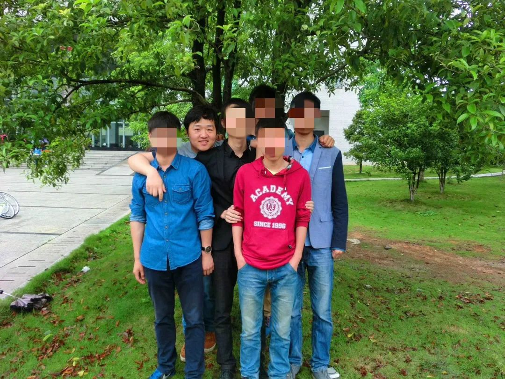

***
***6楼6床的病人走了 | 深度报道
原文链接 备份链接 记者/梁婷 实习记者/周缦卿 陈威敬 胡琪琛 编辑/石爱华 宋建华 彭银华在住院期间留下的照片（图片来自人民日报） 如果没有疫情，彭银华会是一位幸福的新郎，一个准备迎接新生命的父亲。 29岁的彭银华去年正式成为江夏区第 …
***** *****
*****
*****如果没有这场疫情，彭银华的人生才刚刚展开，他29岁，将至而立之年，在去年才正式成为江夏区第一人民医院的呼吸内科医师；**********和妻子结婚两年，他原计划在2月1日为她准备一场迟到两年的婚礼仪式；**********妻子怀孕6个月，不出意外，在今年6月，他还将成为父亲。*****

彭银华的追思会。图源网络
文 | 新京报记者 魏芙蓉 梁静怡
编辑｜陈晓舒 校对 | 薛京宁
►本文约3891字，阅读全文约需8分钟
29岁的彭银华走了。
他是江夏区第一人民医院的呼吸内科医生，疫情来临时，他所在的科室成为抗击疫情的一线。但1月25日，因感染新冠病毒肺炎，彭银华不得不中断工作，住入病房，成为病人。
事实上，如果没有这场疫情，彭银华的人生才刚刚展开，他29岁，将至而立之年，在去年才正式成为江夏区第一人民医院的呼吸内科医师；和妻子结婚两年，他原计划在2月1日为她准备一场迟到两年的婚礼仪式；妻子怀孕6个月，不出意外，在今年的6月，他还将拥有“父亲”这一新身份……
但2月20日21时50分，彭银华的人生戛然而止，连续住院救治27天之后，因为病情加重，他在金银潭医院抢救无效去世。
2月21日，追思会临时在江夏区第一人民医院五楼的报告厅举行。厅内布置简易，彭银华的肖像被投影在厅前的屏幕上，照片中的他打着领结，穿条纹西装，微微斜倚着身子。那原是他为婚礼准备的照片，如今被作为遗照。黄、白色的雏菊就间次摆放照片下的方桌上。
在金银潭最后的20天
*** ***
***
彭银华的最后20天，是在金银潭医院度过的。
他在1月30日病情加重转入金银潭医院。此前五天，彭银华先后经历了两次核酸检测，最终第二次检验中被确诊为新冠肺炎。
金银潭医院重症监护病房南六病区的护士凌云，随安徽医疗队到达金银潭医院支援的第一天，彭银华就出现在了她当天的日志里。
“医生患者呼吸急促达40-50次/分，且深大，严重的碱中毒”，2月2日晚，凌云在日志里记录首次见到彭银华的状况。
在当天，经过一系列的治疗措施后，彭银华的血气分析指标终于向正常值靠近，胃口也渐好，他吃了两份半流质食物，还喝了百普力（营养液）。“医生患者战胜病魔胜券在握了”。凌云在日志里写。
彭银华状态看起来的确不错，这天，出于对凌云护理工作的肯定和感谢，他还主动要求添加凌云的微信，当天晚上下班之后凌云一打开手机，彭银华的好友申请就跳了出来：“南一区，6楼，6床，您照顾的病人”。他在微信上跟刚下班的凌云问好，并告知其好好休息，注意防护。

彭银华和护士凌云的聊天记录。图源受访者
6楼6床的彭银华给不少护士都留下好印象。在接受无创呼吸机和各种穿刺时，彭银华格外配合。“我们经常要给病人抽动脉血看肺氧合情况，抽的时候很疼，有时候动脉很难打上，但他就是能忍着动都不动让你穿刺。”凌云说。
因为呼吸不畅，大部分病人平日里都会觉得特别疲劳。病情在夜晚带来的不适感更强，彭银华住院期间大多习惯在白天睡觉，晚上醒着。凌云就劝他，“白天少睡一点，晚上睡，别把生物钟搞乱了”，凌云没想到的是，彭银华很快便听进去了，一到晚上就把手机关了，安静睡觉。
护士们都关注着这位“医生患者”的病况，她们通过玻璃窗户看到病房中的病人，机器显示“生命体征平稳”，病人状态显示“情绪平稳”。
但是变化来得突然，2月8日，彭银华的心率加快，“开始是80几，后面就达到130 左右”，到当天下午两点多，彭银华的血氧饱和浓度也开始下降，医生给他进行气管插管治疗，上了呼吸机。
接踵而至的是肾和肺的衰竭，“呼酸特别严重，肺部的二氧化碳根本排不出来”，“带呼吸机两天之后，发现小便也没有了，开始做肾透析”。就彭银华的病情骤变问题，凌云曾向主治医生询问，医生说彭银华正处于炎症风暴期，很多重症病人都会经历，“如果病人扛过去了就好了，扛不住就没了”。
彭银华陷入深度昏迷状态，2月19日，医院为他进行了血浆置换，护士张春艳在彭银华身边守了3个小时，看着那40袋50毫升的血浆随着导管流入彭银华的身体，像是一点一点注入康复的希望，“我们都希望他快点好，”张春艳说。清醒时，彭银华曾告诉护士们：老婆怀孕了，自己快做爸爸了。

彭银华的结婚照。图源网络
倒在抗疫岗位上
**********
有关感染新冠病毒的描述，凌云从彭银华那里听到过，“两天时间里，他接诊了300个患者，因为过度疲劳而抵抗力下降”。
疫情发生时，距彭银华成为正式医生才过去半年。2015年6月，彭银华招聘进入到江夏区第一人民医院实习，2016年，在考取执业医生证后，他去到协和医院本部进行了为期3年的培训，2019年6月回到江夏区第一人民医院正式成为一名呼吸内科医生。
1月21日，彭银华所在的呼吸与危重症医学科三病区被列为第二批投入收治“不明原因的病毒性肺炎”的住院隔离病区。
江夏区第一人民医院副院长刘本德在接受媒体采访时透露，疫情暴发初期，该院还未被列为定点医院之前，居住在武汉郊区的非重症和非危重症的患者，若城区医院暂不收治，患者们都会涌向这里。而截至2月14日，该院收治新冠肺炎患者累计接近600人。
妻子钟欣回忆，1月下旬以来，彭银华明显更加忙碌，“他总是加班，经常晚上回到家都是10、11点左右”。在医院的隔离病区组建以后，彭银华作为呼吸内科医生，需要”白班加夜班”轮班倒，他变得更加忙碌，因为担心给家人带来感染风险，彭银华干脆住进了医院，此后再没有回过家。
彭银华在医院忙碌的时间里，钟欣只能通过微信和他交流：“我让他不要太劳累，要注意休息时，他却说不累，说这样的忙碌让他觉得很充实”。
两人只在大年三十那天见了一次面，钟欣去医院给彭银华送日用品，东西放在医院住院部放下就离开，彭银华来取的时候，夫妻俩面对面站着，隔着两三百米的距离通电话，那时候的彭银华戴着口罩和帽子，看不清表情，二人在电话里相互打气，钟欣远远地给他比“V”，是胜利的手势。
她没想到这会是自己和丈夫的最后一次见面。
“我们什么都不要，只要人在”
**********
1月25日，彭银华身体出现了不适，“发烧、咳嗽、喘气”，他在微信上告诉钟欣。但彭银华的同事、江夏区第一人民医院发热重症病区的医生胡珺猜测：“他可能1月23、24日就有点不舒服，但是到25日才重视，过来住院，当时有点发烧、干咳，查了肺部CT有比较典型的病灶”。
随后彭银华在江夏区第一人民医院住院治疗，并在1月28日的第二次核酸检测中被确诊。“其实他在江夏第一人民医院治疗的时候状态还可以，说话、神智都清楚”，钟欣说，2月9日以后，彭银华在金银潭医院病情恶化，陷入深度昏迷，钟欣心里万分着急，每天都会往医院打电话详细询问。

2月2日，彭银华在金银潭医院。图源网络
彭银华在孝感云梦县的父母，也是在这时候才知道儿子患病的消息。此前，彭银华让妻子瞒住了他们。彭银华有一位哥哥和姐姐、在家中排行老三，是最小的一个。“我们第一次得知消息是医院在2月10日告知病危，11日我们得知重危”，彭银华姐姐在接受媒体采访时表示，“医院问我们有什么要求。我们什么都不要，只要人在！”
亲人们都很少把彭银华和最坏的结果联系在一起，“他那么年轻，身体壮实”。
但最坏的消息还是来了。2月20日，钟欣接到了两个来自金银潭医院的电话。
第一个电话是在下午3:50，电话里说，已经在紧急抢救了。钟欣曾经是江夏区第一人民医院的护士，“心里已经有杆秤了”，但因为怀着6月身孕，她试图极力平稳情绪，就像他们之前相互鼓励的一样。
晚上10:18，第二个电话来了，接电话的时候，钟欣浑身颤抖，几乎难以自持。
电话那头的声音告诉她，彭银华走了。
“憨厚的大男孩”
**********
彭银华去世的消息在深夜震惊了很多人，多数熟悉他的人，是在他去世的消息来临时，才首次知道他患病的情况。人们怀念他的悼词里，“踏实”“阳光”“大男孩”这些词数度被提及。
在江夏区第一人民医院共事的半年里，彭银华的同事胡珺回忆：“平时都是支助中心的护士过来陪检查，但是有时候支助忙不过来，彭医生自己就主动出来，8点钟下夜班就可以走了，但是他会陪病人检查，至少花3个小时，他会承担一些本身不是他的任务。”
在彭银华还在武汉协和医院进行为期三年的规培时，医生张靖（化名）就对他印象深刻，“闷头做事，从不张扬”。有一年春节，二人在医院值守，两天之内收治了十几个病患，忙得焦头烂额的时候，张靖看着彭银华“跑前跑后，有条不紊，一点不慌忙”。
张靖见到彭银华的最后一面，是去年在协和医院，他来办规培的结业手续。彭银华憨憨笑，告诉自己，“老师，我签协和江南医院了（即江夏区第一人民医院）”。
彭银华去世后，一张由护士拍下并被广泛传播的照片里，彭银华躺在金银潭医院的病床上，伸手比“V”。张靖看着难言酸楚，觉得是熟悉的彭银华，“阳光、乐观，像个‘大男孩’”。
“大男孩”彭银华个子高、憨厚、能担事，在大学时期就被室友推选当了寝室长，王瑞波是彭银华在湖北科技学院就读时的大学室友，他觉得彭银华不怕“吃亏”。在当时，寝室长的职责需要负责不少“吃亏”的活，寝室在五楼，饮用桶装水要从很远的地方购买再搬回寝室，几乎都是彭银华负责。

彭银华和大学室友，左二为彭银华。图源受访者
也常有“吃亏”的活主找到彭银华，凌晨四点，班上女同学腹痛要就医，班主任一通电话打给他，他也二话不说，把同学背下五楼再送到校门口。
王瑞波说，彭银华家中清贫，父母在位于孝感云梦县的老家做小买卖。2014年，彭银华的父亲被诊断为脑动脉瘤和脑梗塞。规培期间，大学室友经常在一起抱怨三四千元的工资过低，但王瑞波很惊讶的是，彭银华竟然能在这样的情况下挤出一些钱给父母用。
妻子钟欣也提到，即使是在彭银华正式工作后，他的第一笔工资也是给了家里父母。二人初次相识时，彭银华是江夏区第一人民医院的医生，钟欣是护士。二人在2017年领证结婚，但由于工作和经济原因，一直没有举办婚礼仪式。
这场迟到的婚礼原计划在今年的2月1日，大年初八举行，地点是彭银华在孝感云梦的老家。12月8日，彭银华就在群里通知了大学室友。后来，因为疫情，来不及发出的请柬被塞进了办公室的抽屉里。
当噩耗传来时，在彭银华所在的名为“莫逆之交”的大学室友群里，昔日室友们把微信头像都换成了一支烛火，他们彻夜未眠，作为悼念，他们打开了群聊语音，从和彭银华的初次相遇聊到如今。
彭银华喜欢小孩，他在钟欣怀胎初期时就开始期待。而现在，父亲彭银华，会被作为榜样，出现在日后钟欣给孩子讲述的那些故事里。
*洋葱话题*
*▼*
*****你想对离开的医生说什么？*****
*后台回复关键词*****“洋葱君” ，加入读者群****
***推荐阅读***

新冠疫情中陨落的三位武汉教授
一不留神成了“硬通货” | 线上口罩“争夺战”

*********既然在看，就点一下吧****** *********
*********
原文链接 备份链接 记者/梁婷 实习记者/周缦卿 陈威敬 胡琪琛 编辑/石爱华 宋建华 彭银华在住院期间留下的照片（图片来自人民日报） 如果没有疫情，彭银华会是一位幸福的新郎，一个准备迎接新生命的父亲。 29岁的彭银华去年正式成为江夏区第 …
原文链接 备份链接 从第一例患者入院，金银潭医院已超负荷运转近两个月。医生、护士、病人、志愿者，都在为新冠病毒不眠不休，昼夜奋争。绝望和希望、晦暗和明朗、苦涩和感动，也交织纵横，罩住整座江城。 全文7410字，阅读约需14分钟 点击下图 …
原文链接 备份链接 澎湃新闻记者 温潇潇 因在抗击疫情一线感染新冠肺炎，2月20日21时50分，武汉市江夏区第一人民医院（又称“协和江南医院”）呼吸与危重症医学科三病区的医生彭银华，在武汉市金银潭医院去世，年仅29岁。 2月21日，在江夏 …
原文链接 备份链接 “ 据楚天都市报微信公号消息，彭银华原本打算正月初八举办婚礼，但因为疫情发展，彭银华决定坚守在一线。而婚礼的请柬，还放在办公桌抽屉里，没来得及分发。 ” 2020年2月20日晚，武汉市江夏区第一人民医院/协和江南医院发 …
原文链接 备份链接 经历整整31天的艰难考验之后，武汉疫情防控已经从无序走向有序，但千万居民的生活从无序到有序才刚刚开始，这个疫情核心区的社会经济生活全面恢复，还面临很多挑战 2020年2月11日，武汉市洪山体育馆武昌方舱医院，社区工作人 …